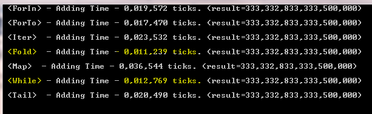

F# C# - Loops Performance: For In, For To, Iter, Map, Fold, While, Tail Rec
Introduction
F# - Loops Performance: For In, For To, Iter, Map, Fold, While, Tail Rec
This is simple sample allows you to play and understand some Loop performance base on summarizing 1M int64 of the number. Surprized “Fold” and “While” are faster Loops … faster when “For” about 30%.
The for...to expression is used to iterate in a loop over a range of values of a loop variable.
The for...in expression can be compared to the for each statement in other .NET languages because it is used to loop over the values in an enumerable collection.
The while...do expression is used to perform iterative execution (looping) while a specified test condition is true.
Also for the same purpose, I used Array function Iter, Map, Fold.
A recursive function is a function which calls itself. This sample using tail recursion.
Surprized “Fold” and “While” are fastest Loops … faster when “For” about 30%.
F#

C#

Building the Sample
Download project. Run Visual Studio and open solution or project.
Description
This project was build for understunding performence for some loops.
using System; using System.Collections.Generic; using System.Linq; using System.Text; using System.Threading.Tasks; using System.Diagnostics; namespace PerformanceOfLoopsCsharp { class Program { static Stopwatch sw = new Stopwatch(); static long[] testArray = new long[1_000_000]; static long result = 0L; static void testForIn() { result = 0L; sw.Reset(); sw.Start(); foreach (long l in testArray) { result = result + l; } sw.Stop(); Console.WriteLine(" <ForIn> - Adding Time - " + sw.ElapsedTicks.ToString("0,000,000") + " ticks. (result=" + result.ToString("0,0") + ")"); Console.WriteLine(); } static void testForTo() { result = 0L; sw.Reset(); sw.Start(); for (int i = 0; i < testArray.Length; i++) { result = result + testArray[i]; } sw.Stop(); Console.WriteLine(" <ForTo> - Adding Time - " + sw.ElapsedTicks.ToString("0,000,000") + " ticks. (result=" + result.ToString("0,0") + ")"); Console.WriteLine(); } static void testDo() { result = 0L; sw.Reset(); sw.Start(); int len = testArray.Length; int i = 0; do { result = result + testArray[i]; i = i + 1; } while (i < len); sw.Stop(); Console.WriteLine(" <Do> - Adding Time - " + sw.ElapsedTicks.ToString("0,000,000") + " ticks. (result=" + result.ToString("0,0") + ")"); Console.WriteLine(); } static void testWhile() { result = 0L; sw.Reset(); sw.Start(); int len = testArray.Length; int i = 0; while (i < len) { result = result + testArray[i]; i = i + 1; } sw.Stop(); Console.WriteLine(" <While> - Adding Time - " + sw.ElapsedTicks.ToString("0,000,000") + " ticks. (result=" + result.ToString("0,0") + ")"); Console.WriteLine(); } static void runAllTests() { testForIn(); testForTo(); testDo(); testWhile(); } static void Main(string[] args) { for (int i = 0; i < 1_000_000; i++) { testArray[i] = (long)i * (long)i; } runAllTests(); Console.ReadLine(); } } }
open System open System.Diagnostics let sw = new Stopwatch() let testArray : int64[] = Array.init 1_000_000 (fun i -> int64(i) * int64(i)) let testForIn() = let mutable result = 0L do sw.Reset() do sw.Start() for i in 0 .. testArray.Length - 1 do result <- result + testArray.[i] do sw.Stop() do Console.WriteLine(" <ForIn> - Adding Time - " + sw.ElapsedTicks.ToString("0,000,000") + " ticks. (result=" + result.ToString("0,0") + ")" ) do Console.WriteLine() let testForTo() = let mutable result = 0L do sw.Reset() do sw.Start() for i = 0 to testArray.Length - 1 do result <- result + testArray.[i] do sw.Stop() do Console.WriteLine(" <ForTo> - Adding Time - " + sw.ElapsedTicks.ToString("0,000,000") + " ticks. (result=" + result.ToString("0,0") + ")" ) do Console.WriteLine() let testIter() = let mutable result = 0L do sw.Reset() do sw.Start() testArray |> Array.iter (fun x -> result <- result + x) do sw.Stop() do Console.WriteLine(" <Iter> - Adding Time - " + sw.ElapsedTicks.ToString("0,000,000") + " ticks. (result=" + result.ToString("0,0") + ")" ) do Console.WriteLine() let testFold() = let mutable result = 0L do sw.Reset() do sw.Start() let sumArray() = Array.fold (fun acc x -> acc + x) 0L testArray do result <- sumArray() do sw.Stop() do Console.WriteLine(" <Fold> - Adding Time - " + sw.ElapsedTicks.ToString("0,000,000") + " ticks. (result=" + result.ToString("0,0") + ")" ) do Console.WriteLine() let testMap() = let mutable result = 0L do sw.Reset() do sw.Start() do testArray |> Array.map (fun x -> result <- result + x) |> ignore do sw.Stop() do Console.WriteLine(" <Map> - Adding Time - " + sw.ElapsedTicks.ToString("0,000,000") + " ticks. (result=" + result.ToString("0,0") + ")" ) do Console.WriteLine() let testWhile() = let mutable result = 0L do sw.Reset() do sw.Start() let len = testArray.Length let mutable i : int = 0 while (i < len) do result <- result + testArray.[i] i <- i + 1 do sw.Stop() do Console.WriteLine(" <While> - Adding Time - " + sw.ElapsedTicks.ToString("0,000,000") + " ticks. (result=" + result.ToString("0,0") + ")" ) do Console.WriteLine() let testRecTail() = let mutable result = 0L do sw.Reset() do sw.Start() let len = testArray.Length let mutable i : int = 0 let sumArray() = let rec sum (l) = match l with | 0 -> 0L | _ -> result <- result + testArray.[l - 1] sum (l - 1) sum (len) do sumArray() |> ignore do sw.Stop() do Console.WriteLine(" <Tail> - Adding Time - " + sw.ElapsedTicks.ToString("0,000,000") + " ticks. (result=" + result.ToString("0,0") + ")" ) do Console.WriteLine() let runAllTests() = do testForIn() do testForTo() do testIter() do testFold() do testMap() do testWhile() do testRecTail() [<EntryPoint>] let main argv = do runAllTests() do Console.ReadLine() |> ignore 0 // return an integer exit code
using System; using System.Collections.Generic; using System.Linq; using System.Text; using System.Threading.Tasks; using System.Diagnostics; namespace PerformanceOfLoopsCsharp { class Program { static Stopwatch sw = new Stopwatch(); static long[] testArray = new long[1_000_000]; static long result = 0L; static void testForIn() { result = 0L; sw.Reset(); sw.Start(); foreach (long l in testArray) { result = result + l; } sw.Stop(); Console.WriteLine(" <ForIn> - Adding Time - " + sw.ElapsedTicks.ToString("0,000,000") + " ticks. (result=" + result.ToString("0,0") + ")"); Console.WriteLine(); } static void testForTo() { result = 0L; sw.Reset(); sw.Start(); for (int i = 0; i < testArray.Length; i++) { result = result + testArray[i]; } sw.Stop(); Console.WriteLine(" <ForTo> - Adding Time - " + sw.ElapsedTicks.ToString("0,000,000") + " ticks. (result=" + result.ToString("0,0") + ")"); Console.WriteLine(); } static void testDo() { result = 0L; sw.Reset(); sw.Start(); int len = testArray.Length; int i = 0; do { result = result + testArray[i]; i = i + 1; } while (i < len); sw.Stop(); Console.WriteLine(" <Do> - Adding Time - " + sw.ElapsedTicks.ToString("0,000,000") + " ticks. (result=" + result.ToString("0,0") + ")"); Console.WriteLine(); } static void testWhile() { result = 0L; sw.Reset(); sw.Start(); int len = testArray.Length; int i = 0; while (i < len) { result = result + testArray[i]; i = i + 1; } sw.Stop(); Console.WriteLine(" <While> - Adding Time - " + sw.ElapsedTicks.ToString("0,000,000") + " ticks. (result=" + result.ToString("0,0") + ")"); Console.WriteLine(); } static void runAllTests() { testForIn(); testForTo(); testDo(); testWhile(); } static void Main(string[] args) { for (int i = 0; i < 1_000_000; i++) { testArray[i] = (long)i * (long)i; } runAllTests(); Console.ReadLine(); } } }
More Information
This is simple sample allows you to play and understand some Loop performance base on summarizing 1M int64 of the number. Surprized “Fold” and “While” are faster Loops … faster when “For” about 30%.